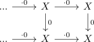

sequential limit of nullhomotopic maps vanishes in a stable category
Proposition
Let $\mathcal{C}$ be a stable category category with sequential limits and $X$ an object. Then the sequential limit $\lim (... \xrightarrow{0} X \xrightarrow{0} X )$ vanishes.
Proof
a)
First we may assume that $\mathcal{C}$ admits sequential limits as we may embedd $\mathcal{C} \hookrightarrow \mathrm{Ind}(\mathcal{C})$ (cf. fully faithful, limit preserving embedding of a stable category into a bicomplete stable category)
observe that the map induced by

is both an equivalence (cf. sequential limit of a morphism inverts the morphism) and the zero morphism (cf. taking arbitrary limits/colimits is an exact functor $\mathrm{Fun}(I, \mathcal{C}) \rightarrow \mathcal{C})$
old)
- nullhomotopic map is equivalence iff object is zero object.